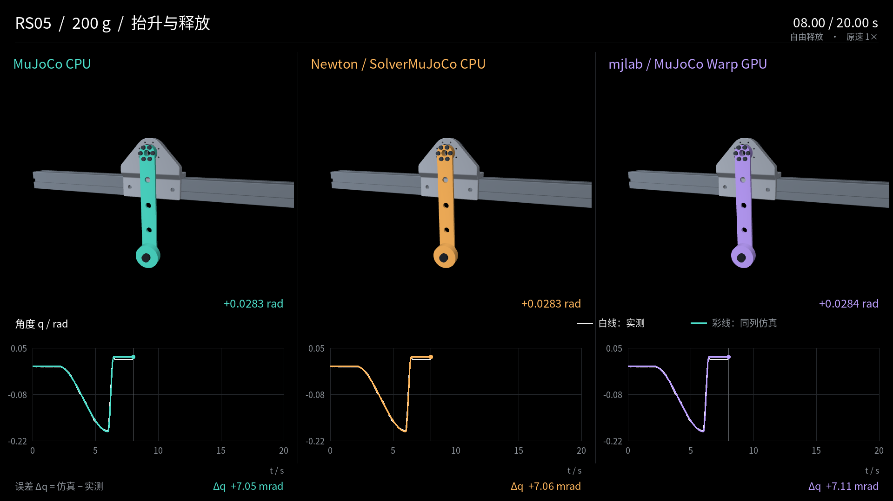

RS05 identification study#
This study applies MotorFit’s workflow to one RobStride RS05 and a measured pendulum. It provides the real recordings used by the offline example and shows both the accuracy and remaining limitations of the selected M1 model.

Experiment#
Item |
Recorded configuration |
|---|---|
Motor |
RobStride RS05, UID |
Loads |
100, 200 and 500 g weights, plus their measured fasteners |
Lever radius |
0.2 m |
Recordings |
37 per load; 111 total |
Original samples |
227,511 |
Collection |
Vendor RS05 C++ interface with a SocketCAN caller and independent wire capture |
Identification |
BAM M1–M6 comparison; M1 selected under the recorded protocol |
The physical tip masses differ from the weight labels because bolts and nuts move with the load. Fixture records those masses and inertia values.
The fixed split contains 32 training, 16 gain-validation, 24 load-validation, 36 final-test and 3 long-test recordings. The gain schedule was:
Weight |
Kd at Kp=10 |
Kd at Kp=20 |
Kd at Kp=30 |
|---|---|---|---|
100 g |
0.5 |
0.6 |
0.8 |
200 g |
0.6 |
0.8 |
1.0 |
500 g |
0.9 |
1.2 |
1.5 |
These are settings for this measured assembly. Earlier 200 g runs with Kp=30/Kd=0.5 showed persistent oscillation and are excluded from the formal dataset. The completed 100 g run 15 retains a documented wrapper-finalization interruption and its verification evidence.
Selected model#
The frozen M1 snapshot shipped with the example contains:
Parameter |
Value |
|---|---|
|
1.163923 |
|
0.000236315 kg·m² |
|
−0.00121425 rad |
|
0.00629308 s |
|
0.0430022 N·m |
|
0.00298792 N·m·s/rad |
The parameter reference explains their meaning.
These values belong to this motor, fixture and experiment. They are not model-wide
RS05 constants. Full-precision values are in
tests/fixtures/offline/model.json.
RS05 reference acquisition#
The historical collector used staged motion schedules at 100 Hz:
Motion |
Schedule |
Duration |
|---|---|---|
Sweep, combined sinusoids, up/down |
2 s hold + 12 s excitation + 4 s return + 2 s hold |
20 s |
Lift and release |
2 s hold + 4 s lift + 14 s disabled observation |
20 s |
Long sweep |
2 s hold + 30 s excitation + 4 s return + 2 s hold |
38 s |
Nominal endpoints were included, producing 2,001 or 3,801 raw timestamps. The current Python recorder uses the trajectory scaling in its own implementation; setting a duration of 20 seconds does not reproduce the historical staged schedule.
Results#
On the 36 final-test records, frozen BAM M1 has mean position MAE of approximately 2.035 mrad. The later MuJoCo 3.17/MJWarp comparison gives about 2.220 mrad with its original friction settings. Those averages coexist with a visible release and stopping error in the 200 g case. Results separates the aggregate accuracy, cross-engine agreement and unresolved behavior.
What to reproduce#
The repository includes three complete recordings, the selected model and saved BAM predictions. Quickstart reproduces this self-contained subset without the research archive.
The full dataset, CAD, extended comparisons and videos are kept in a separate local archive. They are not downloaded by cloning the repository:
data/rs05/
formal-v3/ # 111 recordings, captures and manifest
models/ # candidates and model-selection records
results/ # predictions, comparisons, diagnostics and videos
assets/bench/ # CAD, meshes and measured mass properties
scenes/release/ # release-event scenes
environments/ # runtime inventories and source revisions
When that archive is available, verify its manifest before using it:
uv run --no-sync motorfit verify --dataset data/rs05/formal-v3/manifest.json
The archive’s results/README.md indexes the complete evidence. Model-selection
records are under models/provenance/ and results/identification/.
Advanced validation#
The following operations require the full archive. They are not part of the three-record quickstart.
Replay the CAD fixture#
uv sync --frozen --extra simulation
uv run --no-sync motorfit replay \
--dataset data/rs05/formal-v3/manifest.json --engine mujoco --dt 0.002 \
--scene-assets data/rs05/assets/bench --output outputs/rs05-cad
The default CAD fixture includes the finite-body inertias. Add
--fixture-model identified_point to keep the fitting model’s inertia while
retaining CAD appearance. Without --scene-assets, replay uses the equivalent
pendulum model. These choices must be distinguished in reported results.
A solver comparison can additionally specify
--options configs/simulation/asroballet-option.xml and --friction original
or --friction default. The option file replaces scene solver options; it does
not edit a robot model. --ablations evaluates parameter removals on the training
split. Backends describes runtime requirements.
Audit feedback and release timing#
uv run --no-sync motorfit audit-feedback \
--dataset data/rs05/formal-v3/manifest.json --output outputs/rs05-audit
uv run --no-sync motorfit release-replay \
--dataset data/rs05/formal-v3/manifest.json \
--scenes data/rs05/scenes/release --output outputs/rs05-release
Release replay runs the 27 release records with a C++ helper at a default 62.5 μs timestep. It compares the processed enable transition with STOP-send and acknowledgment times while keeping the model fixed. These are alternative event timing assumptions; none directly measures current decay in the power stage.
export-formal reconstructs BAM JSON from the original CSV/wire captures. It
requires --record, --metadata and --output; use the metadata belonging to the
same capture. New native recordings already have BAM-format raw.json files.
Render saved trajectories#
MUJOCO_GL=egl uv run --no-sync python scripts/render_replay.py \
--dataset data/rs05/formal-v3/manifest.json \
--source data/rs05/results/replay/cad-baseline \
--assets data/rs05/assets/bench --output outputs/rs05-video \
--grams 200 --trajectory lift_and_drop --preview 8
Omit --preview to render the complete recording. The renderer uses saved states
and a common camera; it does not run new physics. ffmpeg and a working graphics
runtime are required.
Complete replay videos#
The archive includes full compilations under results/media/:
File |
Duration |
|---|---|
|
118.000 s |
|
118.033 s |
|
118.000 s |
Each combines four ordinary clips and one long sweep at original speed. The panels show saved MuJoCo, Newton and mjlab CAD-baseline states, with the measured position as reference. They predate the later release-timing study.
How replay duration is calculated#
Display duration is sample_count × dt, rounded up to a whole frame at 30 fps.
The last sample is held for its final display interval. Ordinary clips have 2,000
processed samples at 0.01 s. The long 200 g clip has 3,801 processed samples and
therefore 1,141 video frames; the other long clips have 3,800 samples and 1,140 frames.
This accounts for the 0.033 s difference between compilations.